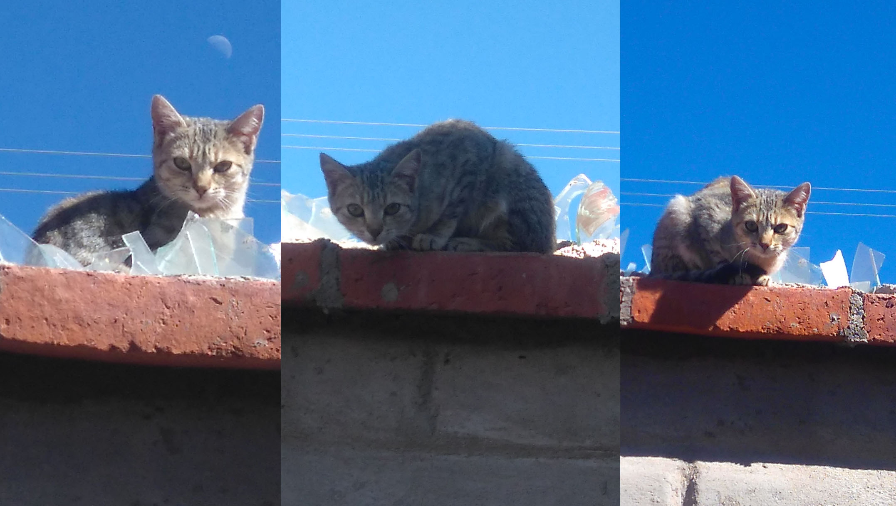
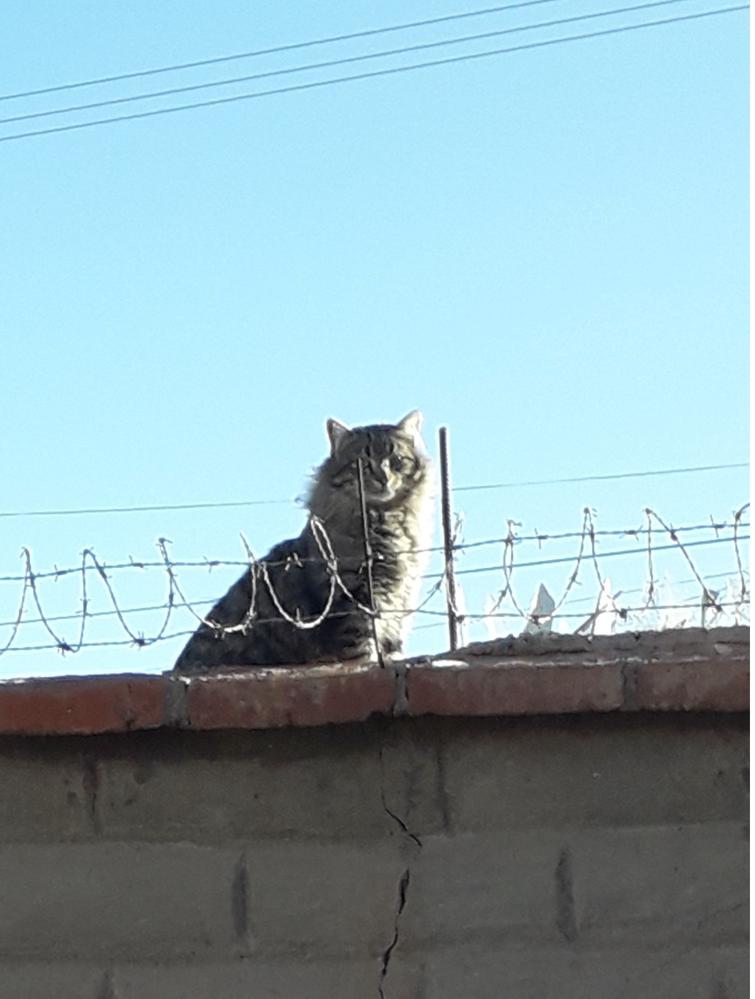
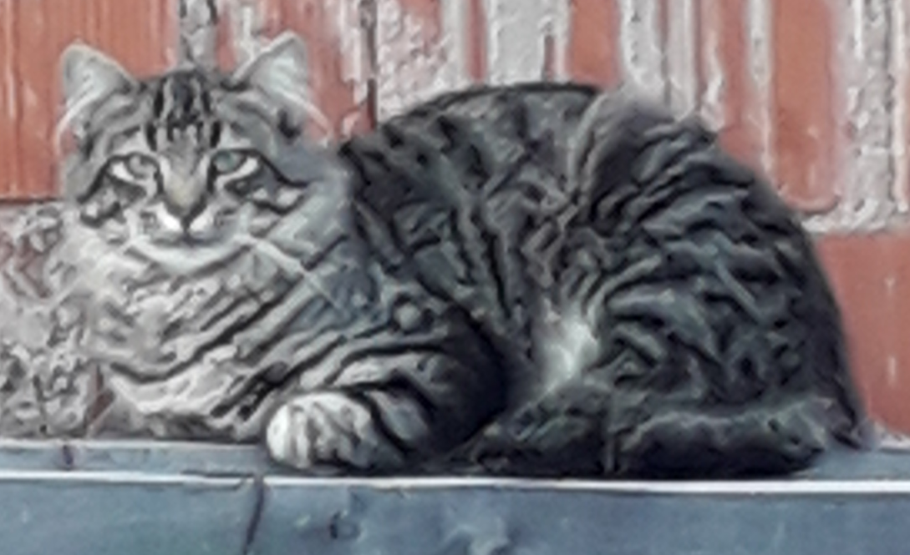
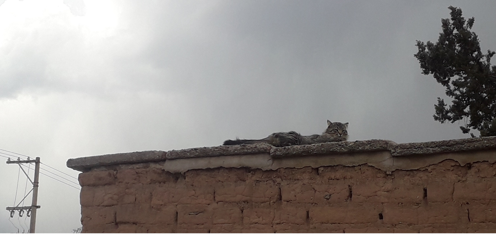

Su vida
En los misteriosos parajes de Humahuaca, Jujuy, nació hace aproximadamente ocho años un felino único en su especie, conocido como Ehl-Julián. Este gato atigrado, de tamaño mediano y pelaje negro y gris, lleva consigo un aura de misterio y magia que ha dejado perplejos a todos aquellos que han tenido el privilegio de cruzar su camino.
Nombre real
Su nombre completo, Ehl-Julián Al-Kazar Mastelotto Grimberg Herrera y Reynoso Alarcón, resuena como un conjuro cósmico que se insinúa en las noches estrelladas de Humahuaca. No es propiedad de ningún dueño en particular, sino que el enigmático Ehl-Julián elige su compañía con sabiduría, estableciendo relaciones únicas con aquellos que logran penetrar en el velo de su escurridiza presencia.
